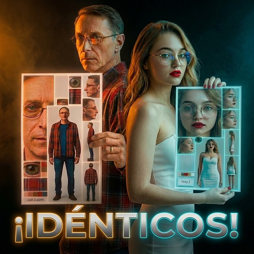

Hoja de personajes IA

Prompt para copiar
[PEGAR_AQUÍ_EL_ENLACE_A_TU_IMAGEN_DE_REFERENCIA] Professional cinematographic high-density model turnaround sheet of [DESCRIPCIÓN_DEL_PERSONAJE]. Space Utilization & Grid Layout (90% Canvas Coverage, <10% background): Extremely dense asymmetric 2K grid with zero dead space. - Primary Hero Panel 1 (Left): Dominant, massive ultra-close-up front portrait of the face, capturing microscopic skin pores. - Primary Hero Panel 2 (Center): Dominant, tall, high-fidelity full-body front view of the character standing. - Secondary Panels (Right side, tightly stacked): Left profile face, right profile face, full-body side view, and full-body back view. - Technical Details (Dense margins): A micro circular inset of the iris, a square macro sample of clothing texture, a tiny 5-swatch color strip, and a clean minimalist label card reading "[NOMBRE_DEL_PERSONAJE]". Strict Likeness & Proportions: Maintain strict and highly accurate replication of the exact facial features, proportions, bone structure, and physical characteristics of the provided reference image. Do not distort, exaggerate, or stylize any facial features; preserve an authentic and identical likeness across all panels. Technical Sharpness & Textures (4K detail density scaled in 2K): Shot on Phase One XF 100MP, macro lens, f/11 aperture for total deep focus sharpness across all figures. Hyper-detailed render of epidermal texture, fine facial wrinkles, sweat pores, and precise clothing fiber weave. Matte fabrics and non-reflective glass to ensure absolute clarity. Clean studio lighting, soft key light, subtle rim lighting. Ultra-sharp color grading, zero blur, maximum high-fidelity production-ready assets. --ar 9:16